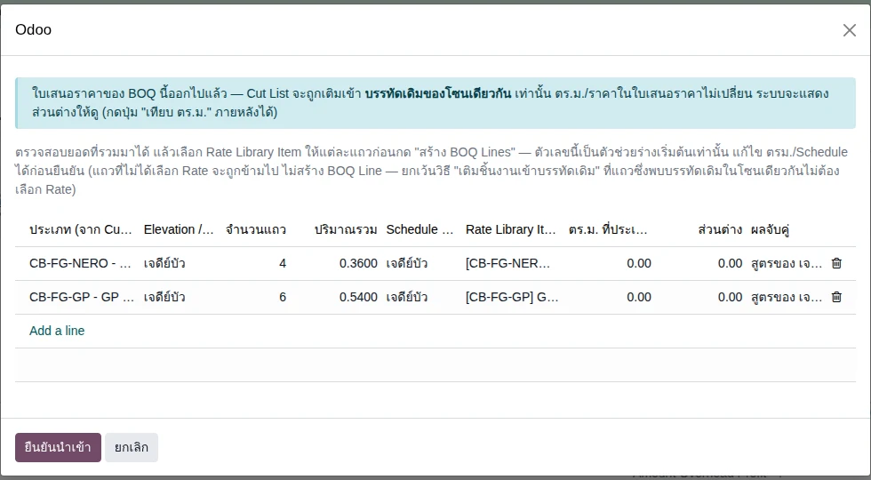
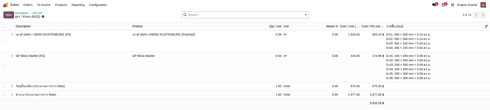
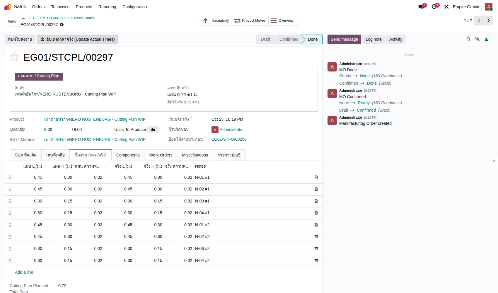
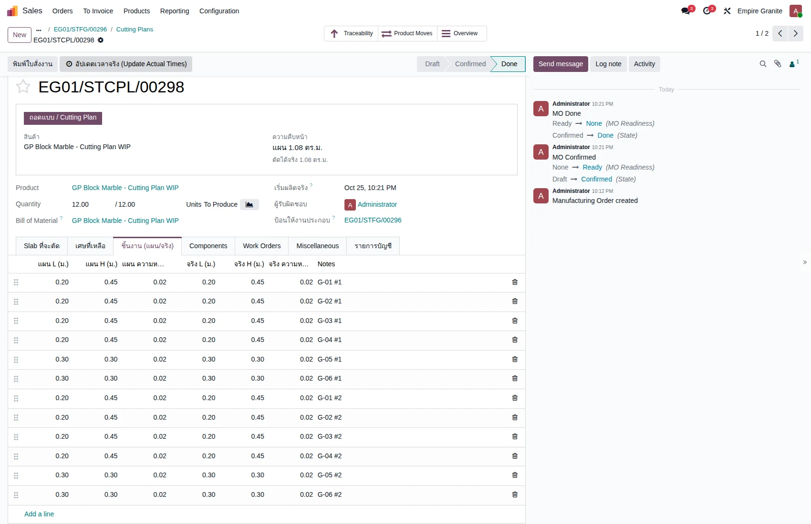
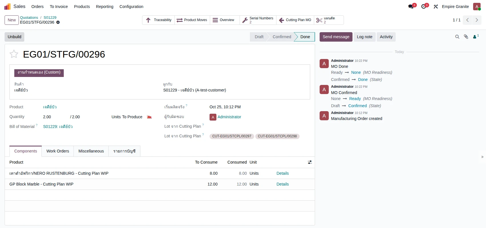
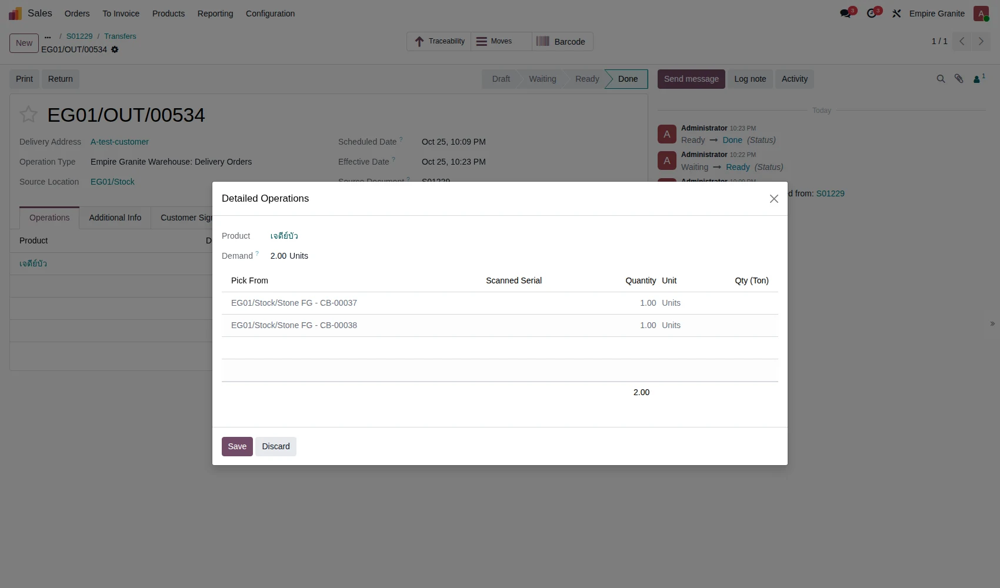
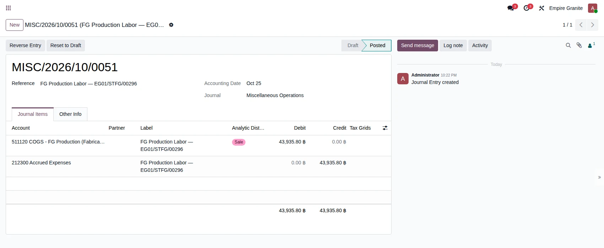

Empire Stone × Empire Granite — QA
Golden Path — FG: Countertop และ Custom FG (เจดีย์บัว) ขายถึงเก็บเงิน
อัปเดตล่าสุด: 25 ตุลาคม 2569 (2026-10-25) · รัน TC-GP-FGS-09 ถึง 18 ใหม่ตามขั้นตอน Custom FG ใหม่ พร้อมภาพใหม่ (TC-01 ถึง 08 ยังเป็นฉบับ 14 ต.ค.) · ระบบ stone_slab_inventory เวอร์ชัน 19.0.2.109.24 · รันใหม่ทั้งชุดบน eg-tst
สองเส้นทางของสินค้า FG เดินครบวงจรหนึ่งครั้ง: A Countertop ขายเป็น ตร.ม. ใส่ชิ้นงานและงานขอบ/เจาะในใบขาย ระบบเลือก Slab ให้ ตัด ส่งของ เก็บเงิน → B/C Custom FG เจดีย์บัว ขายเป็นชิ้น เตรียมสูตรจาก BOQ (นำเข้า Cut List) ตัดหินทีละชนิด ประกอบ ส่งของ เก็บเงิน · รันใหม่ทั้งชุดบน eg-tst เมื่อ 14 ต.ค. 2569 (ต่อจากรอบ 11 ต.ค. ที่ผู้ใช้เดินเอง) · ชุดเก่า (6 ต.ค.) ยังเก็บไว้ เพราะหน้าจอและชื่อปุ่มเปลี่ยนไปแล้ว
18Test Case ทั้งหมด
3หมวด
17High Priority
1Medium Priority
0Low Priority
อ่านก่อน (25 ต.ค. 2569): ลำดับขั้นตอนของชุดนี้ยังใช้ได้ แต่ภาพหน้าจอและตัวเลขรันที่ v109.24 ระบบตอนนี้คือ v109.37 ส่วนที่ผลอาจต่าง — ขั้นเสนอราคา: เปิดหน้าต่างรายชิ้นได้หลัง Save เท่านั้น ไม่มีช่องความหนา (ความหนากำหนดที่ variant) และเส้นทาง Custom FG ผ่าน BOQ เปลี่ยนเป็นขั้นตอน ① → ④ ให้ดู บท 32 และ บท 22
จุดที่ยืนยัน/แก้ในรอบนี้ (ป้ายเขียว "แก้/เพิ่ม" ในแต่ละเคส)
- เส้นทาง A รันซ้ำบน v109.24 ตัวเลขเงินเท่าเดิม ต้นทุน FG 2,430.00 · เส้นทาง B/C รันใหม่ 25 ต.ค. 2569: WIP 5,443.20 + 621.00 / FG เจดีย์บัว 6,064.20 / ค่าแรงเติม 43,935.80
- การแก้ 3 จุดเมื่อ 11 ต.ค. ถูก commit และ deploy แล้ว (ตัดแถว BoM ค้าง, ใบส่งของจอง Lot ของตัวเอง, ปุ่มคัดลอกแผนเป็นขนาดจริง) และผ่านการรันซ้ำ — TC-GP-FGS-05, 07, 13, 15
- ปริมาณบนใบแจ้งหนี้แสดง 3 ตำแหน่ง (3.480 ตร.ม.) จากรอบ Block — TC-GP-FGS-08, 17
- TC-GP-FGS-09 ถึง 18 (เส้นทาง B/C) รันใหม่และถ่ายภาพใหม่ทั้งชุดเมื่อ 25 ต.ค. 2569 ตามขั้นตอน Custom FG ใหม่ (Rate FG ใน BOQ, ใบเสนอราคา/Confirm ก่อนมี Cut List, Cut List มาทีหลัง) · TC-GP-FGS-01 ถึง 08 (เส้นทาง A) ยังเป็นผลรอบ 14 ต.ค.
A. Countertop — ขายเป็น ตร.ม. ตัดจาก Slab ที่ระบบเลือกให้
ใส่ชิ้นงานและงานแปรรูปในใบขาย ระบบสร้างใบสั่งผลิต FG เลือก Slab ให้ ตัด ส่งของ เก็บเงิน · 8 test cases
| TC ID | Scenario | Precondition | Steps | ข้อมูลตัวอย่าง | Expected Result | Priority | ภาพหน้าจอ |
|---|---|---|---|---|---|---|---|
| TC-GP-FGS-01 | สร้างใบเสนอราคา เลือกสินค้า FG ที่ผูกกับวัสดุ ในระบบไม่มีสินค้าชื่อ "Countertop" — เส้นทาง A ใช้สินค้า FG ที่ผูกกับวัสดุ 1 ชนิด (ตัวอย่างนี้ GP Block Marble) ถ้าเลือกสินค้าที่ติ๊ก Custom FG (เช่นเจดีย์บัว) ระบบจะเดินเส้นทาง B แทน |
เข้าระบบเป็น Empire Granite · มีสินค้า FG GP Block Marble และ Slab ของวัสดุนี้ในคลัง |
|
Customer = Demo Hotel Customer สินค้า = GP Block Marble (12,000 บาท/ตร.ม.) |
บรรทัดสินค้า จำนวน 1.00 หน่วย ตร.ม. ราคา 12,000.00 · ยอดก่อน VAT 12,000.00 VAT 7% 840.00 · ท้ายบรรทัดมีไอคอนรายชิ้นงาน (ตัวอย่างจริง S00626) | High |  |
| TC-GP-FGS-02 | ใส่รายการชิ้นงาน 3 ชิ้น กด Save ทุกชิ้นก่อนเพิ่มชิ้นต่อไป · จำนวนในใบขายที่เป็น 1.00 ไว้ก่อน จะถูกแทนที่ด้วยพื้นที่รวมของชิ้นงานเอง |
ทำ TC-GP-FGS-01 เสร็จแล้ว |
|
ท็อปครัว 2.40 × 0.65 เกาะกลาง 1.20 × 0.60 ท็อปอ่างล้างจาน 2.00 × 0.60 (อย่างละ 1 ชิ้น) |
พื้นที่ 1.56 / 0.72 / 1.20 ตร.ม. รวม 3.48 ตร.ม. · จำนวนในบรรทัดใบขายเปลี่ยนเป็น 3.48 เอง | High |  |
| TC-GP-FGS-03 | เพิ่มงานขอบและงานเจาะ แล้วตรวจใบเสนอราคา ขอบของชิ้นงานเรียก A, B, C, D มองจากด้านบน: A = ด้านกว้างบน, B = ด้านยาวขวา, C = ด้านกว้างล่าง, D = ด้านยาวซ้าย · ระบบคำนวณความยาวขอบให้เอง เลือกด้านไหนความยาวก็ตามด้านนั้น (ตอนรันรอบ 2 ของ 11 ต.ค. ผู้ทดสอบเลือกด้านต่างไป ได้ขอบ 3.05 ม. ยอดรวม 48,714.43 บาท ส่วนอื่นเหมือนกัน) |
ทำ TC-GP-FGS-02 เสร็จแล้ว |
|
ขอบ A: ท็อปครัว (2.40 ม.) + เกาะกลาง (1.20 ม.) = 3.60 ม. × 350 ตัดช่องเตา 1 จุด 1,500 ตัดช่องซิงค์ 1 จุด 1,200 |
บรรทัดหิน 3.48 ตร.ม. × 12,000 = 41,760.00 · งานขอบ 3.60 ม. × 350 = 1,260.00 · ตัดช่องเตา 1,500.00 · ตัดช่องซิงค์ 1,200.00 · ยอดก่อน VAT 45,720.00, VAT 7% 3,200.40, รวม 48,920.40 บาท | High |  |
| TC-GP-FGS-04 | Confirm ใบขาย แล้วเปิดใบสั่งผลิต FG ที่ระบบสร้างให้ | ทำ TC-GP-FGS-03 เสร็จแล้ว |
|
- | ใบสั่งผลิตสถานะ Draft ชื่อแนว EG01/STFG/xxxxx (ตัวอย่างจริง EG01/STFG/00156) ป้าย "ผลิต FG จาก Slab" ผูกกับบรรทัดใบขาย · การ์ดแสดง "ต้องใช้ 3.83 ตร.ม." และ "Slab ที่เลือก 7.50 ตร.ม." ป้ายเขียว "พอ" · แถบเหลืองบอกให้กด "ย้ายไปสถานีตัด" ก่อน Confirm · แท็บผลผลิต FG มี 3 แถว (2.40 × 0.65, 1.20 × 0.60, 2.00 × 0.60) พร้อมหมายเหตุงานขอบและงานเจาะให้ช่างอ่าน | High |  |
| TC-GP-FGS-05 | ย้าย Slab ไปสถานีตัด แล้ว Confirm ใบสั่งผลิต แก้/เพิ่ม รอบ 14 ต.ค. 2569 (v109.24) — รันซ้ำแล้ว: แถว Components แสดงเฉพาะ Slab ที่เลือกจริง ป้ายเขียว Available (การแก้เมื่อ 11 ต.ค. ถูก commit และ deploy แล้ว) ตั้งแต่ 11 ต.ค. 2569 แท็บ Components แสดงเฉพาะ Slab ที่ระบบเลือกจริง (Polished, 2 cm) — ก่อนแก้ จะมีแถว "Honed, 3 cm" ป้ายแดง Not Available ค้างอยู่ ซึ่งลูกค้าเห็นแล้วเข้าใจผิดว่าของไม่พอ |
ทำ TC-GP-FGS-04 เสร็จแล้ว |
|
Slab ที่ระบบเลือก = BLK-26-0006-34 และ -35 (แผ่นละ 3.00 × 1.25 ม. รวม 7.50 ตร.ม.) | ข้อความ "ย้ายสำเร็จ ... ย้าย 2 lot ไป Stone Production แล้ว — กด Confirm ได้เลย" · สถานะ Confirmed ปุ่มเปลี่ยนเป็น "ผลิต FG เสร็จ" · Components มีแถวเดียว Slab (Polished, 2 cm) 2.00 Units ป้ายเขียว Available | High |  |
| TC-GP-FGS-06 | ผลิต FG เสร็จ (Complete FG Production) แท็บ "เศษที่เหลือ" กรอกได้ (Slab ต้นทาง ขนาด จำนวน) เพื่อให้เศษได้ Lot ของตัวเองและหักต้นทุนส่วนเศษออกจาก FG — ในการรันจริงไม่ได้กรอกเศษ ต้นทุน Slab ทั้งแผ่นจึงเข้า FG ทั้งหมด (ยังไม่ได้ทดสอบกรณีมีเศษในรอบนี้ ดูผลของเดิมในบท 32 หัวข้อ A.8–A.10) |
ทำ TC-GP-FGS-05 เสร็จแล้ว |
|
ไม่กรอกเศษ | ข้อความ "Complete FG Production สำเร็จ ... ผลิตสำเร็จ 3.48 หน่วย" · สถานะ Done · ได้ FG 3 Lot (ตัวอย่าง FG-EG01/STFG/00156-01 = 2.40 × 0.65 · -02 = 1.20 × 0.60 · -03 = 2.00 × 0.60) อยู่ที่ EG01/Stock/Stone FG รวม 3.48 ตร.ม. · มูลค่าวัสดุ FG 2,430.00 บาท (Slab 2 แผ่น) · มีสมาร์ทปุ่ม Traceability / Product Moves | High |  |
| TC-GP-FGS-07 | ส่งของ — ตรวจ Lot แล้ว Validate แก้/เพิ่ม รอบ 14 ต.ค. 2569 (v109.24) — รันซ้ำแล้ว: ใบส่งของจองเฉพาะ Lot ของใบสั่งผลิตนี้ (3 แถว) ไม่มี Lot งานอื่นปน (การแก้เมื่อ 11 ต.ค. ถูก commit และ deploy แล้ว) ⚠ ก่อนแก้ (11 ต.ค. 2569) ใบส่งของ Countertop อาจจอง FG ของงานเก่าปน แล้วขึ้นป้ายแดง Not Available ต้องลบแถวผิดและเพิ่ม Lot ที่ถูกเอง · หลังแก้ ระบบจองเฉพาะ Lot ที่ใบสั่งผลิตของบรรทัดนี้ผลิตให้ครบเอง แต่ยังควรเปิด Details ดูก่อน Validate ทุกครั้ง · ต้องส่งของ (Done) ก่อนจึงออกใบแจ้งหนี้ได้ ถ้ากด Create Invoice ก่อน ระบบแจ้ง "No items are available to invoice" |
ทำ TC-GP-FGS-06 เสร็จแล้ว |
|
- | Details แสดง 3 แถวจาก Stone FG: -01 (1.56), -02 (0.72), -03 (1.20) รวม 3.48 ตร.ม. ไม่มี Lot ของงานอื่น · ใบส่งของเป็น Done Demand 3.48 Quantity 3.48 ตร.ม. และใบขายคอลัมน์ Delivered เป็น 3.48 (ตัวอย่างจริง EG01/OUT/00333) | High |  |
| TC-GP-FGS-08 | ออกใบแจ้งหนี้ Confirm และตรวจรายการบัญชี แก้/เพิ่ม รอบ 14 ต.ค. 2569 (v109.24) — ปริมาณบนบรรทัดใบแจ้งหนี้แสดง 3 ตำแหน่ง (เช่น 3.480 ตร.ม., 3.600 ม.) เพราะรอบ Block ตั้งทศนิยมบรรทัดบิลเป็น 3 ตำแหน่งทั้งระบบ ยอดเงินไม่เปลี่ยน |
ทำ TC-GP-FGS-07 เสร็จแล้ว (ใบส่งของ Done) |
|
- | ใบแจ้งหนี้ Posted ยอดก่อน VAT 45,720.00, VAT 3,200.40, รวม 48,920.40 · เครดิต 411100 รายได้ 4 บรรทัด (41,760 / 1,260 / 1,500 / 1,200) · เครดิต 213200 ภาษีขาย 3,200.40 · เดบิต 112100 ลูกหนี้ 48,920.40 · เดบิต 511110 ต้นทุนขาย 2,430.00 เครดิต 113150 สินค้าคงเหลือ Stone FG 2,430.00 (ตรงกับต้นทุน FG) (ตัวอย่างจริง INV/2026/00032) | High |  |
B. Custom FG (เจดีย์บัว) — BOQ ราคาคงที่ + Cut List มาทีหลัง แล้วขายเป็นชิ้น
สร้าง BOQ ด้วย Rate เจดีย์บัว ออกใบเสนอราคาและ Confirm ก่อนมี Cut List แล้วนำเข้า Cut List ทีหลัง ระบบโหลดสูตรและสร้างใบสั่งผลิตให้ · 4 test cases
| TC ID | Scenario | Precondition | Steps | ข้อมูลตัวอย่าง | Expected Result | Priority | ภาพหน้าจอ |
|---|---|---|---|---|---|---|---|
| TC-GP-FGS-09 | สร้าง BOQ: เลือก Rate เจดีย์บัว ในโซนของมัน แล้วออกใบเสนอราคา ปรับขั้นตอนเมื่อ 25 ต.ค. 2569 (boq_estimation 1.50) · Rate "เจดีย์บัว - standard" ตั้งราคาคงที่ (Fixed Price) 50,000 ต่อชิ้น แก้ราคาที่บรรทัดได้ · ผู้ใช้ไม่ต้องใส่ Rate หิน วัสดุสิ้นเปลือง หรือค่าแรง · วัสดุสิ้นเปลือง 675 และค่าแรง 2,477 ตั้งที่ Rate เป็นค่าประมาณต้นทุน (ราคาตัวอย่าง) ไม่รวมในราคาขาย |
เข้าระบบเป็น Empire Granite · Rate Library มี CB-FG-001 เจดีย์บัว - standard (Fixed Price 50,000) · สินค้า เจดีย์บัว เป็น Custom FG |
|
Customer = A-test-customer โซน = เจดีย์บัว · ปริมาณ 2 ชิ้น × 50,000 |
BOQ มี 1 บรรทัด รวม 100,000.00 (ตัวอย่างจริง BOQ0742) · ได้ใบเสนอราคา S01229 ยอดก่อน VAT 100,000.00, VAT 7% 7,000.00, รวม 107,000.00 · บรรทัดใบเสนอราคาอยู่ใต้หัวข้อโซน "เจดีย์บัว" ยังไม่มีต้นทุนประมาณ (เพราะยังไม่มี Cut List) | High |  |
| TC-GP-FGS-10 | Confirm ใบเสนอราคาก่อนมี Cut List ระบบไม่ขวาง Confirm แต่ยังไม่สร้างใบสั่งผลิต (ยังไม่รู้ว่าต้องตัดหินชิ้นไหน) · เปิดคอลัมน์ "สถานะต้นทุน" ที่ไอคอนตัวเลือกคอลัมน์หัวตาราง ถ้ายังไม่เห็น |
ทำ TC-GP-FGS-09 เสร็จแล้ว (ยังไม่นำเข้า Cut List) |
|
- | สถานะเป็น Sales Order ยอดเท่าเดิม 100,000.00 · ต้นทุน/ชิ้น และ Margin/ชิ้น เป็น 0.00 · คอลัมน์ "สถานะต้นทุน" ขึ้นสีแดง "ยังประเมินต้นทุนไม่ได้ (ยังไม่มี Cut List)" · Chatter: "ยังประเมินต้นทุนไม่ได้ — ยังไม่มี Cut List ของ: เจดีย์บัว - standard" · ยังไม่มีสมาร์ทปุ่ม FG Production (มีแค่ Delivery) | High |  |
| TC-GP-FGS-11 | นำเข้า Cut List ที่ BOQ หลัง Confirm แล้ว ไฟล์มีเฉพาะชิ้นหิน (10 แถว) ไม่ต้องใส่ Rate ล่วงหน้า · ชื่อโซนในไฟล์ต้องตรงกับ BOQ ทุกตัวอักษร · หน้า Preview มีปุ่ม "ยืนยันนำเข้า" · นำเข้าซ้ำไฟล์เดิม = อัปเดตแถวเดิม ไม่สร้างซ้ำ |
ทำ TC-GP-FGS-10 เสร็จแล้ว · ไฟล์ตัวอย่าง cutlist-import-example-chedi-bua-recipe.xlsx (หน้า Library) |
|
ไฟล์ = cutlist-import-example-chedi-bua-recipe.xlsx | Preview แสดง 2 กลุ่มในโซนเจดีย์บัว: CB-FG-NERO 4 แถว 0.3600 ตร.ม. และ CB-FG-GP 6 แถว 0.5400 ตร.ม. ข้อความ "สูตรของ เจดีย์บัว: สร้างบรรทัดสูตร (ไม่ขึ้นใบเสนอราคา)" · BOQ ได้บรรทัดสูตร 2 แถว (ปุ่ม "รายชิ้น" ที่แถว) ยอด BOQ ยังเป็น 100,000.00 และใบเสนอราคาไม่เปลี่ยน | High |  |
| TC-GP-FGS-12 | ตรวจสูตรต้นทุนบนใบขาย และใบสั่งผลิตที่ระบบสร้างให้ เพราะ Confirm ไปแล้ว ระบบโหลดสูตรและสร้างใบสั่งผลิตให้ทันทีที่ Cut List เข้า (ขึ้นข้อความใน Chatter) ต้นทุนหินคือค่าเฉลี่ยถ่วงน้ำหนักจาก Slab ในสต็อก ส่วนวัสดุสิ้นเปลือง/ค่าแรงเป็นค่าประมาณจาก Rate · ใบสั่งผลิตสถานะ Draft เหมือนเดิม · ตัดหินความหนา 20 มม. |
ทำ TC-GP-FGS-11 เสร็จแล้ว |
|
- | ต้นทุน/ชิ้น 3,910.16 · Margin/ชิ้น 46,089.84 · สูตร 4 แถว: NERO 0.36 ตร.ม. × 1,620 = 583.20 · GP Block Marble 0.54 ตร.ม. × 324 = 174.96 · วัสดุสิ้นเปลือง 675.00 · ค่าแรง 2,477.00 · คอลัมน์ "สถานะต้นทุน" ว่าง · ได้ใบสั่งผลิต 3 ใบ Draft: งานประกอบ EG01/STFG/00296 (2.00 Units, ป้าย "งานกำหนดเอง (Custom)") · ใบตัดหิน NERO EG01/STCPL/00297 (8 ชิ้น = 4 × 2) · ใบตัดหิน GP EG01/STCPL/00298 (12 ชิ้น = 6 × 2) · Chatter: "the Cut List arrived after Confirm — recipe loaded and the Cutting Plan + Assembly built." (ตรวจบน eg-tst 25 ต.ค. 2569) | High |  |
C. Custom FG — ตัดหินทีละชนิด ประกอบ ส่งมอบ และเก็บเงิน
ใบตัดหินแต่ละชนิด (ใช้ปุ่มคัดลอกแผน) งานประกอบ Produce All ส่งของ ใบแจ้งหนี้ และตรวจต้นทุนค่าแรง · 6 test cases
| TC ID | Scenario | Precondition | Steps | ข้อมูลตัวอย่าง | Expected Result | Priority | ภาพหน้าจอ |
|---|---|---|---|---|---|---|---|
| TC-GP-FGS-13 | ใบตัดหิน NERO — ย้ายไปสถานีตัด Confirm กรอกขนาดจริง แล้วถอดแบบเสร็จ รันซ้ำ 25 ต.ค. 2569 ด้วยขั้นตอนใหม่ (S01229) · ปุ่ม "คัดลอกแผนเป็นขนาดจริง" เติมขนาดจริงจากแผนให้ทุกแถวที่ยังว่าง · ไม่ได้บันทึกเศษที่เหลือ ต้นทุน Slab ทั้งแผ่นจึงเข้า WIP ทั้งหมด (5,443.20 สูงกว่าประมาณการในสูตร) · ความหนาชิ้นตัด 0.02 ม. ตามความหนามาตรฐานของวัสดุ |
ทำ TC-GP-FGS-12 เสร็จแล้ว |
|
Slab ที่ระบบเลือก = BLK-26-0015-32 (2.80 × 1.20 ม. 3.36 ตร.ม.) ชิ้นงาน 8 ชิ้น: 0.45 × 0.30 (4) และ 0.30 × 0.15 (4) หนา 0.02 |
ข้อความ "ย้ายสำเร็จ 1 lot ไป Stone Production" · หลังกดปุ่มคัดลอก ช่อง "จริง L / จริง H / จริง ความหนา" ครบทุกแถวเท่าแผน · ใบเป็น Done การ์ด "แผน 0.72 ตร.ม. ตัดได้จริง 0.72 ตร.ม." · ได้ WIP Lot CUT-EG01/STCPL/00297 จำนวน 8 ชิ้น มูลค่า 5,443.20 บาท (3.36 ตร.ม. × 1,620) · ช่อง "ป้อนให้งานประกอบ" = EG01/STFG/00296 | High |  |
| TC-GP-FGS-14 | ใบตัดหิน GP Block Marble — ทำแบบเดียวกัน ระบบเลือก Slab GP 2 แผ่น (ตัด 12 ชิ้น) ต้นทุนรวมของ 2 แผ่นเข้า WIP ทั้งหมด · ถ้าช่างพิมพ์ขนาดจริงใหญ่กว่าแผน การ์ด "ตัดได้จริง" จะสูงกว่าแผน แต่ต้นทุนไม่เปลี่ยน เพราะต้นทุนคิดจาก Slab ที่ใช้จริง · ใบสั่งตัดอ้างอิง Slab ตัวแปร "Honed, 3 cm" แต่ตัดที่ความหนา 0.02 ม. (รอยืนยันกับลูกค้า) |
ทำ TC-GP-FGS-13 เสร็จแล้ว |
|
ชิ้นงาน 12 ชิ้น: 0.20 × 0.45 (8 ชิ้น) และ 0.30 × 0.30 (4 ชิ้น) หนา 0.02 | ใบเป็น Done จำนวน 12.00 · แผน 1.08 ตร.ม. · ได้ WIP Lot CUT-EG01/STCPL/00298 จำนวน 12 ชิ้น ที่ Stone Production มูลค่า 621.00 บาท (ต้นทุน Slab 2 แผ่น) | High |  |
| TC-GP-FGS-15 | Confirm งานประกอบ แล้ว Produce All Confirm งานประกอบไม่ได้จนกว่าใบตัดหินที่ผูกกันทุกใบจะ Done · วัสดุสิ้นเปลือง/ค่าแรงในสูตรของ Rate ใหม่เป็นค่าประมาณ ไม่มีสินค้าผูก ไม่ถูกตัดสต็อก จึงไม่มีแถวกาว/ซีลแลนท์ใน Components · ใบงานประกอบที่ Done แล้วมีปุ่ม Unbuild (ยังไม่ได้ทดลอง) |
ทำ TC-GP-FGS-14 เสร็จแล้ว (ใบตัดหินทั้ง 2 ใบ Done) |
|
- | Component Status = Available · ช่อง "Lot จาก Cutting Plan" แสดง CUT-EG01/STCPL/00297 และ 00298 · Components: WIP NERO 8, WIP GP 12 · หลัง Produce All สถานะ Done Quantity 2.00 / 2.00 มีสมาร์ทปุ่ม Serial Numbers 2 · ได้ FG เจดีย์บัว 2 ชิ้น (Serial CB-00037, CB-00038) มูลค่า 6,064.20 บาท (= 5,443.20 + 621.00) ชิ้นละ 3,032.10 | High |  |
| TC-GP-FGS-16 | ส่งของ Custom FG ตาม Serial ถ้ากด Create Invoice ก่อนส่งของ ระบบแจ้ง "Cannot create an invoice. No items are available to invoice" ให้ Validate ใบส่งของให้เป็น Done ก่อน |
ทำ TC-GP-FGS-15 เสร็จแล้ว |
|
- | Details แสดง Serial 2 ตัวจาก EG01/Stock/Stone FG ตัวละ 1.00 Units (ไม่มี FG ของงานอื่นปน) · ใบส่งของ Done Demand 2.00 Quantity 2.00 Units (ตัวอย่างจริง EG01/OUT/00534) · ใบขาย Delivered = 2.00 | High |  |
| TC-GP-FGS-17 | ออกใบแจ้งหนี้ Confirm และตรวจรายการบัญชี รันซ้ำ 25 ต.ค. 2569 ด้วย S01229 |
ทำ TC-GP-FGS-16 เสร็จแล้ว |
|
- | ใบแจ้งหนี้ Posted ยอดก่อน VAT 100,000.00, VAT 7% 7,000.00, รวม 107,000.00 · เครดิต 411100 รายได้ 100,000.00 · เครดิต 213200 ภาษีขาย 7,000.00 · เดบิต 112100 ลูกหนี้ 107,000.00 · เดบิต 511110 ต้นทุนขาย 6,064.20 เครดิต 113150 สินค้าคงเหลือ Stone FG 6,064.20 (ต้นทุนวัสดุของ FG ไม่รวมค่าแรง) (ตัวอย่างจริง INV/2026/00040) | High |  |
| TC-GP-FGS-18 | ตรวจรายการบัญชีค่าแรงของงานประกอบ ⚠ ข้อสังเกตที่ควรถามลูกค้า: ต้นทุนรวมที่ลงบัญชี 50,000 บาท (วัสดุหิน 6,064.20 + ค่าแรงเติม 43,935.80) ต่างจากประมาณการในสูตร 7,820.32 (3,910.16 × 2) มาก เพราะระบบมีกติกาต้นทุนไม่ต่ำกว่า 50% ของรายได้ แล้วเติมส่วนต่างเป็นค่าแรง ค่าวัสดุสิ้นเปลือง 675 และค่าแรง 2,477 ต่อชิ้นที่ตั้งไว้ที่ Rate ไม่ถูกนำไปลงบัญชี ใช้เป็นประมาณการแสดง Margin เท่านั้น · กติกา 50% เป็นการออกแบบเดิมของระบบ (ตั้งค่าได้) ไม่ใช่ความผิดพลาดของการรัน |
ทำ TC-GP-FGS-15 เสร็จแล้ว |
|
รายได้บรรทัดงาน = 100,000 · วัสดุ FG = 6,064.20 · ต้นทุนขั้นต่ำ 50% | รายการ MISC/2026/10/0051 "FG Production Labor — EG01/STFG/00296" เดบิต 511120 ค่าแรง 43,935.80 เครดิต 212300 (บัญชีค้างจ่ายค่าแรง) 43,935.80 (= 50% × 100,000 − 6,064.20) · ค่าแรงนี้ไม่รวมอยู่ในต้นทุนขาย 6,064.20 ของใบแจ้งหนี้ | Medium |  |